Table of Contents
11. Conic Sections
11.1. Introduction to Conic Sections
11.1.1. What Are Conic Sections?
11.1.2. Eccentricity
11.1.3. Types of Conic Sections
11.2. The Parabola
11.2.1. Parabolas As Conic Sections
11.2.2. Applications of the Parabola
11.3. The Circle and the Ellipse
11.3.1. Introduction to Circles
11.3.2. Introduction to Ellipses
11.3.3. Parts of an Ellipse
11.3.4. Applications of Circles and Ellipses
11.4. The Hyperbola
11.4.1. Introduction to Hyperbolas
11.4.2. Parts of a Hyperbola
11.4.3. Applications of Hyperbolas
11.5. Nonlinear Systems of Equations and Inequalities
11.5.1. Nonlinear Systems of Equations and Problem-Solving
11.5.2. Models Involving Nonlinear Systems of Equations
11.5.3. Nonlinear Systems of Inequalities
11. Conic Sections
11.1. Introduction to Conic Sections
11.1.1. What Are Conic Sections?
Conic sections are obtained by the intersection of the surface of a cone with a plane, and have certain features.
Learning Objective
Describe the parts of a conic section and how conic sections can be thought of as cross-sections of a double-cone
Key Points
- A conic section (or simply conic) is a curve obtained as the intersection of the surface of a cone with a plane; the three types are parabolas, ellipses, and hyperbolas.
- A conic section can be graphed on a coordinate plane.
- Every conic section has certain features, including at least one focus and directrix. Parabolas have one focus and directrix, while ellipses and hyperbolas have two of each.
- A conic section is the set of points $P$ whose distance to the focus is a constant multiple of the distance from $P$ to the directrix of the conic.
Key Terms
- focus
- A point used to construct and define a conic section, at which rays reflected from the curve converge (plural: foci).
- locus
- The set of all points whose coordinates satisfy a given equation or condition.
- asymptote
- A straight line which a curve approaches arbitrarily closely as it goes to infinity.
- vertex
- An extreme point on a conic section.
- nappe
- One half of a double cone.
- conic section
- Any curve formed by the intersection of a plane with a cone of two nappes.
- directrix
- A line used to construct and define a conic section; a parabola has one directrix; ellipses and hyperbolas have two (plural: directrices).
Defining Conic Sections
A conic section (or simply conic) is a curve obtained as the intersection of the surface of a cone with a plane. The three types of conic sections are the hyperbola, the parabola, and the ellipse. The circle is type of ellipse, and is sometimes considered to be a fourth type of conic section.
Conic sections can be generated by intersecting a plane with a cone. A cone has two identically shaped parts called nappes. One nappe is what most people mean by “cone,” and has the shape of a party hat.
Conic sections are generated by the intersection of a plane with a cone. If the plane is parallel to the axis of revolution (the $y$ -axis), then the conic section is a hyperbola. If the plane is parallel to the generating line, the conic section is a parabola. If the plane is perpendicular to the axis of revolution, the conic section is a circle. If the plane intersects one nappe at an angle to the axis (other than $90^{\circ}$ ), then the conic section is an ellipse.
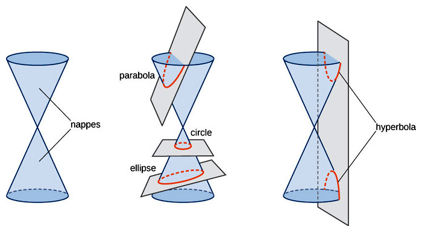{kind=link}
The nappes and the four conic sections. Each conic is determined by the angle the plane makes with the axis of the cone.
Common Parts of Conic Sections
While each type of conic section looks very different, they have some features in common. For example, each type has at least one focus and directrix.
A focus is a point about which the conic section is constructed. In other words, it is a point about which rays reflected from the curve converge. A parabola has one focus about which the shape is constructed; an ellipse and hyperbola have two.
A directrix is a line used to construct and define a conic section. The distance of a directrix from a point on the conic section has a constant ratio to the distance from that point to the focus. As with the focus, a parabola has one directrix, while ellipses and hyperbolas have two.
These properties that the conic sections share are often presented as the following definition, which will be developed further in the following section. A conic section is the locus of points $P$ whose distance to the focus is a constant multiple of the distance from $P$ to the directrix of the conic. These distances are displayed as orange lines for each conic section in the following diagram.
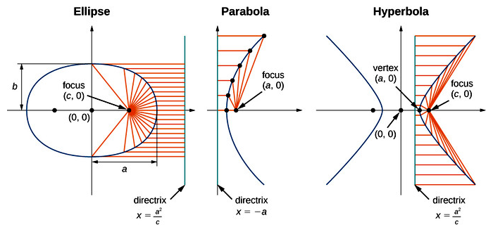{kind=link}
The three conic sections with foci and directrices labeled.
Each type of conic section is described in greater detail below.
Parabola
A parabola is the set of all points whose distance from a fixed point, called the focus, is equal to the distance from a fixed line, called the directrix. The point halfway between the focus and the directrix is called the vertex of the parabola.
In the next figure, four parabolas are graphed as they appear on the coordinate plane. They may open up, down, to the left, or to the right.
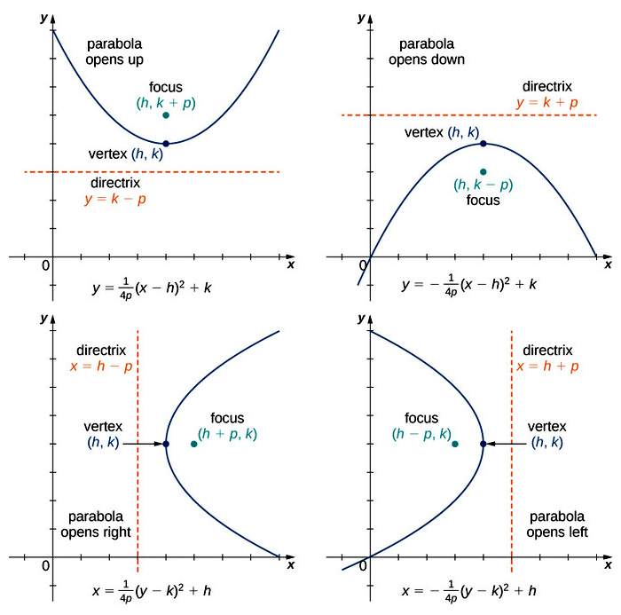{kind=link}
The vertex lies at the midpoint between the directrix and the focus.
Ellipses
An ellipse is the set of all points for which the sum of the distances from two fixed points (the foci) is constant. In the case of an ellipse, there are two foci, and two directrices.
In the next figure, a typical ellipse is graphed as it appears on the coordinate plane.
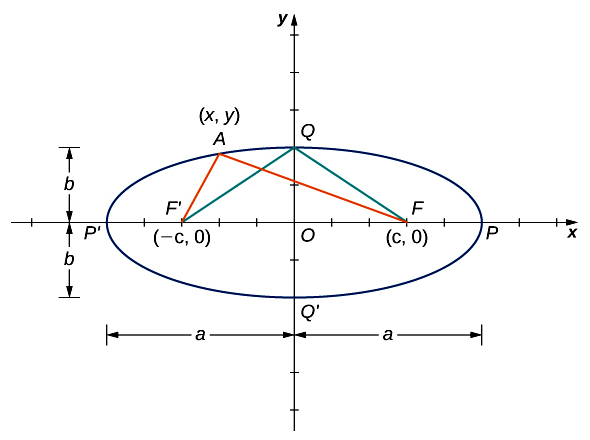{kind=link}
The sum of the distances from any point on the ellipse to the foci is constant.
Hyperbolas
A hyperbola is the set of all points where the difference between their distances from two fixed points (the foci) is constant. In the case of a hyperbola, there are two foci and two directrices. Hyperbolas also have two asymptotes.
A graph of a typical hyperbola appears in the next figure.
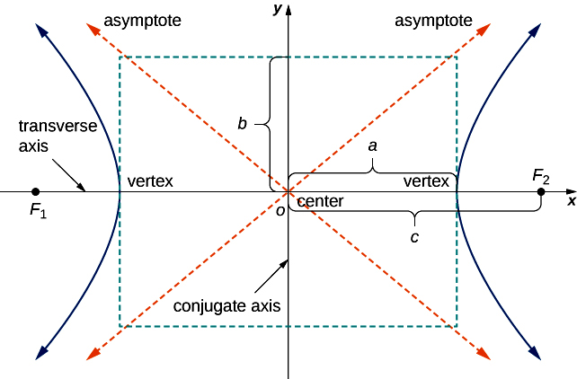{kind=link}
The difference of the distances from any point on the ellipse to the foci is constant. The transverse axis is also called the major axis, and the conjugate axis is also called the minor axis.
Applications of Conic Sections
Conic sections are used in many fields of study, particularly to describe shapes. For example, they are used in astronomy to describe the shapes of the orbits of objects in space. Two massive objects in space that interact according to Newton's law of universal gravitation can move in orbits that are in the shape of conic sections. They could follow ellipses, parabolas, or hyperbolas, depending on their properties.
11.1.2. Eccentricity
Every conic section has a constant eccentricity that provides information about its shape.
Learning Objective
Discuss how the eccentricity of a conic section describes its behavior
Key Points
- Eccentricity is a parameter associated with every conic section, and can be thought of as a measure of how much the conic section deviates from being circular.
- The eccentricity of a conic section is defined to be the distance from any point on the conic section to its focus, divided by the perpendicular distance from that point to the nearest directrix.
- The value of $e$ can be used to determine the type of conic section. If $e= 1$ it is a parabola, if $e < 1$ it is an ellipse, and if $e > 1$ it is a hyperbola.
Key Term
- eccentricity
- A parameter of a conic section that describes how much the conic section deviates from being circular.
Defining Eccentricity
The eccentricity, denoted $e$ , is a parameter associated with every conic section. It can be thought of as a measure of how much the conic section deviates from being circular.
The eccentricity of a conic section is defined to be the distance from any point on the conic section to its focus, divided by the perpendicular distance from that point to the nearest directrix. The value of $e$ is constant for any conic section. This property can be used as a general definition for conic sections. The value of $e$ can be used to determine the type of conic section as well:
- If $e = 1$ , the conic is a parabola
- If $e < 1$ , it is an ellipse
- If $e > 1$ , it is a hyperbola
The eccentricity of a circle is zero. Note that two conic sections are similar (identically shaped) if and only if they have the same eccentricity.
Recall that hyperbolas and non-circular ellipses have two foci and two associated directrices, while parabolas have one focus and one directrix. In the next figure, each type of conic section is graphed with a focus and directrix. The orange lines denote the distance between the focus and points on the conic section, as well as the distance between the same points and the directrix. These are the distances used to find the eccentricity.
{kind=link}
Eccentricity is the ratio between the distance from any point on the conic section to its focus, and the perpendicular distance from that point to the nearest directrix.
Conceptualizing Eccentricity
From the definition of a parabola, the distance from any point on the parabola to the focus is equal to the distance from that same point to the directrix. Therefore, by definition, the eccentricity of a parabola must be $1$ .
For an ellipse, the eccentricity is less than $1$ . This means that, in the ratio that defines eccentricity, the numerator is less than the denominator. In other words, the distance between a point on a conic section and its focus is less than the distance between that point and the nearest directrix.
Conversely, the eccentricity of a hyperbola is greater than $1$ . This indicates that the distance between a point on a conic section the nearest directrix is less than the distance between that point and the focus.
11.1.3. Types of Conic Sections
Conic sections are formed by the intersection of a plane with a cone, and their properties depend on how this intersection occurs.
Learning Objective
Discuss the properties of different types of conic sections
Key Points
- Conic sections are a particular type of shape formed by the intersection of a plane and a right circular cone. Depending on the angle between the plane and the cone, four different intersection shapes can be formed.
- The types of conic sections are circles, ellipses, hyperbolas, and parabolas.
- Each conic section also has a degenerate form; these take the form of points and lines.
Key Terms
- hyperbola
- The conic section formed by the plane being perpendicular to the base of the cone.
- ellipse
- The conic section formed by the plane being at an angle to the base of the cone.
- circle
- The conic section formed by the plane being parallel to the base of the cone.
- focus
- A point away from a curved line, around which the curve bends.
- asymptote
- A line which a curved function or shape approaches but never touches.
- degenerate
- A conic section which does not fit the standard form of equation.
- vertex
- The turning point of a curved shape.
- Parabola
- The conic section formed by the plane being parallel to the cone.
- eccentricity
- A dimensionless parameter characterizing the shape of a conic section.
Conic sections are a particular type of shape formed by the intersection of a plane and a right circular cone. Depending on the angle between the plane and the cone, four different intersection shapes can be formed. Each shape also has a degenerate form. There is a property of all conic sections called eccentricity, which takes the form of a numerical parameter $e$ . The four conic section shapes each have different values of $e$ .
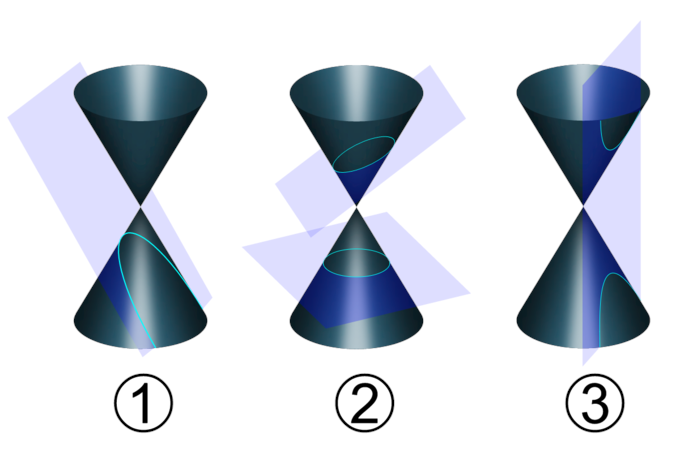{kind=link}
This figure shows how the conic sections, in light blue, are the result of a plane intersecting a cone. Image 1 shows a parabola, image 2 shows a circle (bottom) and an ellipse (top), and image 3 shows a hyperbola. Three double cones (two cones touching each other at their points, like an hourglass) with planes crossing through them. 1 has the plane perpendicuar to the edge of one cone, making a parabola. 2 has two planes crossing through it at angles less than the edge of the cone, making one closed ellipse and one circle when the plane is horizontal. 3 has a plane crossing through the cone vertically, making a hyperbola.
Parabola
A parabola is formed when the plane is parallel to the surface of the cone, resulting in a U-shaped curve that lies on the plane. Every parabola has certain features:
- A vertex, which is the point at which the curve turns around
- A focus, which is a point not on the curve about which the curve bends
- An axis of symmetry, which is a line connecting the vertex and the focus which divides the parabola into two equal halves
All parabolas possess an eccentricity value $e=1$ . As a direct result of having the same eccentricity, all parabolas are similar, meaning that any parabola can be transformed into any other with a change of position and scaling. The degenerate case of a parabola is when the plane just barely touches the outside surface of the cone, meaning that it is tangent to the cone. This creates a straight line intersection out of the cone's diagonal.
Non-degenerate parabolas can be represented with quadratic functions such as
Circle
A circle is formed when the plane is parallel to the base of the cone. Its intersection with the cone is therefore a set of points equidistant from a common point (the central axis of the cone), which meets the definition of a circle. All circles have certain features:
- A center point
- A radius, which the distance from any point on the circle to the center point
All circles have an eccentricity $e=0$ . Thus, like the parabola, all circles are similar and can be transformed into one another. On a coordinate plane, the general form of the equation of the circle is
where $(h,k)$ are the coordinates of the center of the circle, and $r$ is the radius.
The degenerate form of the circle occurs when the plane only intersects the very tip of the cone. This is a single point intersection, or equivalently a circle of zero radius.
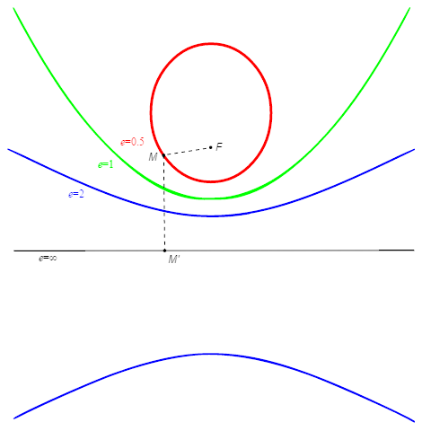{kind=link}
This graph shows an ellipse in red, with an example eccentricity value of $0.5$ , a parabola in green with the required eccentricity of $1$ , and a hyperbola in blue with an example eccentricity of $2$ . It also shows one of the degenerate hyperbola cases, the straight black line, corresponding to infinite eccentricity. The circle is on the inside of the parabola, which is on the inside of one side of the hyperbola, which has the horizontal line below it. In this way, increasing eccentricity can be identified with a kind of unfolding or opening up of the conic section.
Ellipse
When the plane's angle relative to the cone is between the outside surface of the cone and the base of the cone, the resulting intersection is an ellipse. The definition of an ellipse includes being parallel to the base of the cone as well, so all circles are a special case of the ellipse. Ellipses have these features:
- A major axis, which is the longest width across the ellipse
- A minor axis, which is the shortest width across the ellipse
- A center, which is the intersection of the two axes
- Two focal points—for any point on the ellipse, the sum of the distances to both focal points is a constant
Ellipses can have a range of eccentricity values: $0 \leq e < 1$ . Notice that the value $0$ is included (a circle), but the value $1$ is not included (that would be a parabola). Since there is a range of eccentricity values, not all ellipses are similar. The general form of the equation of an ellipse with major axis parallel to the x-axis is:
where $(h,k)$ are the coordinates of the center, $2a$ is the length of the major axis, and $2b$ is the length of the minor axis. If the ellipse has a vertical major axis, the $a$ and $b$ labels will switch places.
The degenerate form of an ellipse is a point, or circle of zero radius, just as it was for the circle.
Hyperbola
A hyperbola is formed when the plane is parallel to the cone's central axis, meaning it intersects both parts of the double cone. Hyperbolas have two branches, as well as these features:
- Asymptote lines—these are two linear graphs that the curve of the hyperbola approaches, but never touches
- A center, which is the intersection of the asymptotes
- Two focal points, around which each of the two branches bend
- Two vertices, one for each branch
The general equation for a hyperbola with vertices on a horizontal line is:
where $(h,k)$ are the coordinates of the center. Unlike an ellipse, $a$ is not necessarily the larger axis number. It is the axis length connecting the two vertices.
The eccentricity of a hyperbola is restricted to $e > 1$ , and has no upper bound. If the eccentricity is allowed to go to the limit of $+\infty$ (positive infinity), the hyperbola becomes one of its degenerate cases—a straight line. The other degenerate case for a hyperbola is to become its two straight-line asymptotes. This happens when the plane intersects the apex of the double cone.
11.2. The Parabola
11.2.1. Parabolas As Conic Sections
Parabolas are one of the four shapes known as conic sections, and they have many important real world applications.
Learning Objective
Describe the parts of a parabola as parts of a conic section
Key Points
- A parabola is formed by the intersection of a plane and a right circular cone.
- All parabolas contain a focus, a directrix, and an axis of symmetry. These vary in exact location depending on the equation used to define the parabola.
- Parabolas are frequently used in physics and engineering for things such as the design of automobile headlight reflectors and the paths of ballistic missiles.
- Parabolas are frequently encountered as graphs of quadratic functions, including the very common equation $y=x^2$ .
Key Terms
- focus
- A point inside the parabolic section defined by forming a right triangle with the axis of symmetry and the cone's horizontal radius.
- axis of symmetry
- A line that divides the parabola into two equal halves and also passes through the vertex of the parabola.
- vertex
- The point where the plane intersects the exterior surface of the right circular cone, forming one end of the parabola.
- ballistic
- Relating to projectiles moving under their own momentum, air drag, gravity, and sometimes rocket power
- directrix
- A line used to define a curve or surface, especially a line from which any point on a parabola curve has a distance equal to the distance from the focus.
In mathematics, a parabola is a conic section, created from the intersection of a right circular conical surface and a plane parallel to a generating straight line of that surface. In other words, the plane is at the same angle as the outside surface of the cone.
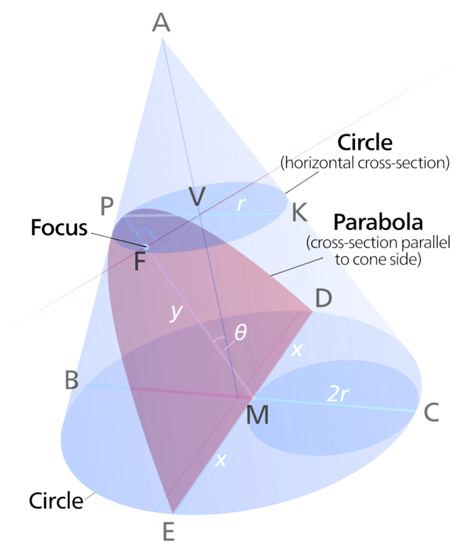{kind=link}
This diagram shows how a parabola is generated by the intersection of a plane with a right circular cone. It also shows the $y$ and $x$ axes that would be used to view the parabola on a coordinate graph. The vertex of the parabola here is point $P$ , and the diagram shows the radius $r$ between that point and the cone's central axis, as well as the angle $\theta$ between the parabola's axis of symmetry and the cone's central axis.
All parabolas have the same set of basic features. The axis of symmetry is a line that is at the same angle as the cone and divides the parabola in half.
Vertex
The vertex is the point where the plane intersects the exterior surface of the cone. It forms the rounded end of the parabola. The vertex is therefore also a point on the cone, and the distance between that point and the cone's central axis is the radius of a circle.
Focus
In the diagram showing the parabolic conic section, a red line is drawn from the center of that circle to the axis of symmetry, so that a right angle is formed. The point on the axis of symmetry where the right angle is located is called the focus. By doing this, a right triangle is created.
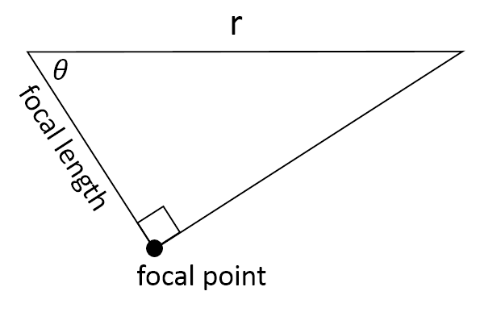{kind=link}
A right triangle is formed from the focal point of the parabola.
The focal length is the leg of the right triangle that exists along the axis of symmetry, and the focal point is the vertex of the right triangle. Using the definition of sine as opposite over hypotenuse, we can find a formula for the focal length "$f$ " in terms of the radius and the angle:
Directrix
All parabolas have a directrix. The directrix is a straight line on the opposite side of the parabolic curve from the focus. The parabolic curve itself is the set of all points that are equidistant (equal distances) from both the directrix line and the focus.
Features of Parabolas
On a coordinate plane, parabolas are frequently encountered as graphs of quadratic functions, such as:
Parabolas can open up, down, left, right, or in some other arbitrary direction. Any parabola can be repositioned and rescaled to fit exactly on any other parabola—that is, all parabolas are similar.
To locate the $x$ -coordinate of the vertex, cast the equation for $y$ in terms of $a x^2 + b x + c$ . The vertex will be at the point:
For example, in the parabola $y=x^2$ , $a=1$ , $b=0$ , $c=0$ , and the vertex is at $x=0$ .
Parabolas have the property that, if they are made of material that reflects light, then light which enters a parabola traveling parallel to its axis of symmetry is reflected to its focus. This happens regardless of where on the parabola the reflection occurs. Conversely, light that originates from a point source at the focus is reflected, or collimated, into a parallel beam. The light leaves the parabola parallel to the axis of symmetry. The same effect occurs with sound and other forms of energy. This reflective property is the basis of many practical uses of parabolas.
The parabola has many important applications, from the design of automobile headlight reflectors to calculating the paths of ballistic missiles. They are frequently used in physics, engineering, and other sciences.
11.2.2. Applications of the Parabola
Parabolas have important applications in physics, engineering, and nature.
Learning Objective
Discuss models of physical situations that use parabolas
Key Points
- Projectiles and missiles follow approximately parabolic paths. They are approximate because real-world imperfections affect the movements of objects.
- Parabolic reflectors are common in microwave and satellite dish receiving and transmitting antennas.
- Paraboloids are also observed in the surface of a liquid confined to a container and rotated around the central axis.
Key Terms
- projectile
- Any object propelled through space by the application of a force.
- ballistics
- The science of objects that predominately fly under the effects of gravity, such as bullets, missiles, or rockets.
- conical
- Shaped like a cone; of or relating to a cone or cones.
A parabola is a conic section created from the intersection of a right circular conical surface and a plane parallel to a generating straight line of that surface. The parabola has many important applications, from the design of automobile headlight reflectors to calculating the paths of ballistic missiles. They are frequently used in areas such as engineering and physics, and often appear in nature.
The parabolic trajectory of projectiles was discovered experimentally in the 17th century by Galileo, who performed experiments with balls rolling on inclined planes. What Galileo discovered and tested was that when gravity is the only force acting on an object, the distance it falls is directly proportional to the time squared. This is the exact mathematical relationship we know as a parabola.
For objects extended in space, such as a diver jumping from a diving board, the object follows a complex motion as it rotates, while its center of mass forms a parabola.
Real World Parabolic Trajectories
As in all cases in the physical world, using the equation of a parabola to model a projectile's trajectory is an approximation. The presence of air resistance, for instance, distorts the parabolic shape. At higher speeds, such as in ballistics, the shape can be highly distorted. This is because air resistance is a force acting on the object, and is proportional to the object's area, density, and speed squared. For dense objects, and/or at low speeds, the air resistance force is small. So, at low speeds the parabola shape can be a very good approximation.
Examples
Paraboloids arise in many physical situations. All of the physical examples are situations where an object's trajectory or the shape of an object fits a generalized parabola function:
The parameters $a$ , $b$ , and $c$ determine the direction as well as the exact shape and position of the parabola.
Parabolic Reflectors
One well-known example is the parabolic reflector—a mirror or similar reflective device that concentrates light or other forms of electromagnetic radiation to a common focal point. Conversely, a parabolic reflector can collimate light from a point source at the focus into a parallel beam. This principle was applied to telescopes in the 17th century. Today, paraboloid reflectors are common throughout much of the world in microwave and satellite dish receiving and transmitting antennas.
Liquid Paraboloids
Paraboloids are also observed in the surface of a liquid confined to a container that is rotated around a central axis. In this case, liquid moves away from the center, and it "climbs" the walls of the container, forming a parabolic surface. This is the principle behind the liquid mirror telescope.
The "Vomit Comet"
Aircraft used to create a weightless state for purposes of experimentation, such as NASA's "Vomit Comet," follow a vertically parabolic trajectory for brief periods. This allows them to trace the course of an object in free fall. This can produce the same effect as zero gravity, and lets the passengers on the aircraft experience the feeling of being in space.
11.3. The Circle and the Ellipse
11.3.1. Introduction to Circles
The equation for a circle is an extension of the distance formula.
Learning Objective
Explain how the equation of a circle describes its properties
Key Points
- A circle is defined as the set of points that are a fixed distance from a center point.
- The distance formula can be extended directly to the definition of a circle by noting that the radius is the distance between the center of a circle and the edge.
- The general equation for a circle, centered at $\left(a,b\right)$ with radius $r$ , is the set of all points $\left(x,y\right)$ such that $\left(x-a\right)^2+\left(y-b\right)^2=r^2$ .
- Pi ($\pi$ ) is the ratio of a circle's circumference to its diameter.
Key Terms
- diameter
- Two times the radius of a circle.
- circle
- A two-dimensional geometric figure, consisting of the set of all those points in a plane that are equally distant from another point.
- radius
- A line segment between any point on the circumference of a circle and its center.
- area
- The interior surface of a circle, given by
$A = \pi r^2$ .
The definition of a circle is as simple as the shape. A circle is the set of all points that are at a certain distance from a center point. This definition is what gives us the concept of the radius of a circle, which is equal to that certain distance.
Since we know a circle is the set of points a fixed distance from a center point, let's look at how we can construct a circle in a Cartesian coordinate plane with variables $x$ and $y$ . To find a formula for this, suppose that the center is the point $\left(a,b\right)$ . According to the distance formula, the distance $c$ from the point $\left(a,b\right)$ to any other point $\left(x,y\right)$ is:
$\displaystyle{c = \sqrt{ \left(x-a\right)^2 + \left(y-b\right)^2}} $
If we now square this equation on both sides, we have:
Remember that the distance between the center $\left(a,b\right)$ and any point $\left(x,y\right)$ on the circle is that fixed distance, which is called the radius. So let's change this equation so that it uses $r$ instead of $c$ .
This is the general formula for a circle with center $\left(a,b\right)$ and radius $r$ . Notice that all we have done is slightly rearrange the distance formula equation.
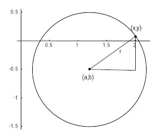{kind=link}
The circle with center $\left(a,b\right)$ is graphed in the Cartesian plane.
Parts of a Circle
Now that we have an algebraic foundation for the circle, let's connect it to what we already know about some different parts of the circle.
Diameter
The diameter is any straight line that passes through the center of the circle. It is equal to twice the radius, so:
Circumference
The circumference is the length of the path around the circle. Algebraically it is given by:
$c = 2\pi r$
or equivalently by $c = \pi d$ . The number $\pi$ (pi) is defined by this relationship. It is the ratio of any circle's circumference to its own diameter.
Area
The area of a circle is given by:
Notice that the radius is the only defining parameter for the size of any particular circle, and so it is the only variable that the area depends on.
11.3.2. Introduction to Ellipses
Understand the equation of an ellipse as a stretched circle.
Learning Objective
Connect the equation for an ellipse to the equation for a circle with stretching factors
Key Points
- An ellipse and a circle are both examples of conic sections.
- A circle is a special case of an ellipse, with the same radius for all points.
- By stretching a circle in the x or y direction, an ellipse is created.
An ellipse is one of the shapes called conic sections, which is formed by the intersection of a plane with a right circular cone. The general equation of an ellipse centered at $\left(h,k\right)$ is:
when the major axis of the ellipse is horizontal.
{kind=link}
An ellipse is a conic section, formed by the intersection of a plane with a right circular cone.
In most definitions of the conic sections, the circle is defined as a special case of the ellipse, when the plane is parallel to the base of the cone. However, it is also possible to begin with the definition of a circle and use graphical transformations to arrive at the general formula for an ellipse.
Recall that a circle is defined as the set of all points equidistant from a common center. For simplicity, we will choose that center to be $\left(0,0\right)$ , the origin of the $x$ -$y$ plane. Then we can write the equation of the circle in this way:
In this equation, $r$ is the radius of the circle. A circle has only one radius—the distance from the center to any point is the same. To change our circle into an ellipse, we will have to stretch or squeeze the circle so that the distances are no longer the same. First, let's start with a specific circle that's easy to work with, the circle centered at the origin with radius $1$ .
To make this into an ellipse, we must distort the circular shape so that it is no longer symmetric between $x$ and $y$ . To do this, we introduce a scaling factor into one or both of the $x$ -$y$ coordinates. Let's start by dividing all $x$ coordinates by a factor $a$ , and therefore scaling the $x$ values. We simply substitute $\displaystyle{\frac{x}{a}}$ into the equation instead of $x$ . Important note: We assume that $a > 1$ .

The ellipse $\left( \frac{x}{3} \right)^2 +y^2 = 1$ has been stretched along the $x$ -axis by a factor of 3 as compared to the circle $x^2 + y^2 = 1$ .
Every $x$ -value that solved the old equation must now be multiplied by $a$ in order to solve the new equation. This has the effect of stretching the ellipse further out on the $x$ -axis, because larger values of $x$ are now the solutions.
Similarly, we can scale all the values of $y$ by a factor $b$ (we also assume $b > 1$ ).
$\displaystyle {x^2 + \left(\frac{y}{b}\right)^2 = 1}$
Now all the $y$ values are stretched vertically, further away from the origin.

The ellipse $x^2 +\left( \frac{y}{3} \right)^2 = 1$ has been stretched along the $y$ -axis by a factor of 3 as compared to the circle $x^2 + y^2 = 1$ .
If we stretch in both the $x$ and $y$ directions and distribute the powers of two through the parentheses, we get:
which is exactly the equation of a horizontal ellipse centered at the origin.
If we had used scaling factors that were less than one, it would have compressed the shape instead of stretching it further out.
11.3.3. Parts of an Ellipse
Ellipses are one of the types of conic sections. The specific features of an ellipse can be determined from its equation.
Learning Objective
Discuss how the equation of an ellipse describes its properties
Key Points
- An ellipse is formed by a plane intersecting a cone at an angle to its base.
- All ellipses have two focal points, or foci. The sum of the distances from every point on the ellipse to the two foci is a constant.
- All ellipses have a center and a major and minor axis.
- All ellipses have eccentricity values greater than or equal to zero, and less than one.
Equation of an Ellipse
An ellipse is a conic section, formed by the intersection of a plane with a right circular cone. The standard form for the equation of the ellipse is:
if the ellipse is oriented horizontally, and:
if the ellipse is oriented vertically. We will use the horizontal case to demonstrate how to determine the properties of an ellipse from its equation, so that $a$ is associated with x-coordinates, and $b$ with y-coordinates. For a vertical ellipse, the association is reversed.
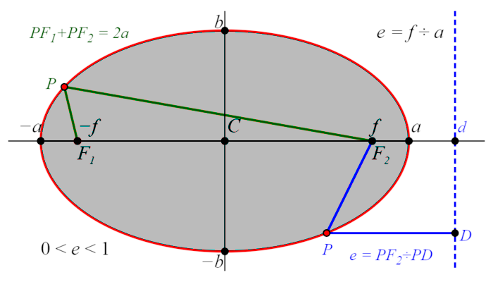{kind=link}
This diagram of a horizontal ellipse shows the ellipse itself in red, the center $C$ at the origin, the focal points at $\left(+f,0\right)$ and $\left(-f,0\right)$ , the major axis vertices at $\left(+a,0\right)$ and $\left(-a,0\right)$ , the minor axis vertices at $\left(0,+b\right)$ and $\left(0,-b\right)$ . It also shows how the sum of the distances from any point on the ellipse to the two foci is a constant at $2a$ (the length of the major axis), and how the eccentricity is determined by the ratio of the distance from a point on the ellipse to one of the foci to the perpendicular distance from the point to a line $D$ called the directrix, outside the ellipse and perpendicular to the major axis.
Parts of an Ellipse
Center
The center of the ellipse has coordinates $(h,k)$ .
Major Axis
The major axis of the ellipse is the longest width across it. For a horizontal ellipse, that axis is parallel to the $x$ -axis. The major axis has length $2a$ . Its endpoints are the major axis vertices, with coordinates $(h \pm a, k)$ .
Minor Axis
The minor axis of the ellipse is the shortest width across it. For a horizontal ellipse, it is parallel to the $y$ -axis. The minor axis has length $2b$ . Its endpoints are the minor axis vertices, with coordinates $(h, k \pm b)$ .
Foci
The foci are two points inside the ellipse that characterize its shape and curvature. For a horizontal ellipse, the foci have coordinates $(h \pm c,k)$ , where the focal length $c$ is given by
Eccentricity
All conic sections have an eccentricity value, denoted $e$ . All ellipses have eccentricities in the range $0 \leq e < 1$ . An eccentricity of zero is the special case where the ellipse becomes a circle. An eccentricity of $1$ is a parabola, not an ellipse.
The eccentricity is defined as:
or, equivalently:
The orbits of the planets and their moons are ellipses with very low eccentricities, which is to say they are nearly circular. The orbits of comets around the sun can be much more eccentric. For comets and planets, the sun is located at one focus of their elliptical orbits.
11.3.4. Applications of Circles and Ellipses
Circles and ellipses are encountered in everyday life, and knowing how to solve their equations is useful in many situations.
Learning Objective
Describe applications of the circle and ellipse formulas to real world problems
Key Points
- The standard form of the equation for a circle is $\left(x-h\right)^2+\left(y-k\right)^2=r^2$ , where $r$ is the radius, and $\left(h,k\right)$ is the center point coordinate.
- The standard form of the equation for an ellipse is $\displaystyle{\frac {\left(x-h\right)^2}{a^2}+\frac {\left(y-k\right)^2}{b^2}= 1}$ , where $\left(h,k\right)$ is the center point coordinate, $2a$ is the length of the major/minor axis, and $2b$ is the minor/major axis length.
- If $a>b$ , the major axis is parallel to the $x$ axis. If $a<b$ , the major axis is parallel to the $y$ axis (perpendicular to the $x$ axis).
- To determine the parameters of a circle or an ellipse, you must first put the equation into the standard form.
Key Terms
- circle
- A two-dimensional geometric figure, consisting of the set of all those points in a plane that are equally distant from another point.
- ellipse
- A closed curve, the locus of a point such that the sum of the distances from that point to two other fixed points (called the foci of the ellipse) is constant; equivalently, the conic section that is the intersection of a cone with a plane that does not intersect the base of the cone.
Circles are all around you in everyday life, from tires on cars to buttons on coats, as well as on the tops of bowls, glasses, and water bottles. Ellipses are less common. One example is the orbits of planets, but you should be able to find the area of a circle or an ellipse, or the circumference of a circle, based on information given to you in a problem. Circles and ellipses are examples of conic sections, which are curves formed by the intersection of a plane with a cone.
Some sample problems are shown below, with solutions worked out.
Exercise 1
Let's say you are a gardener, and you have just planted a lot of flowers that you want to water. The flower bed is 15 feet wide, and 15 feet long. You are using a circular sprinkler system, and the water reaches 6 feet out from the center. The sprinkler is located, from the bottom left corner of the bed, 7 feet up, and 6 feet over.
- If the flower bed was a graph with the bottom left corner being the origin, what would the equation of the circle be?
- What is the area being watered by the sprinkler?
- What percentage of the garden that is being watered?
Answer
If the bottom left corner is the origin, it has coordinates $\left(0,0\right)$ . From there the sprinkler is 6 feet over, so the $x$ -coordinate of the center is 6. The sprinkler is 7 feet up, so the $y$ -coordinate of the center is 7. Ergo, the center of the circle is at coordinate $\left(6,7\right)$ . The water reaches 6 feet out from the sprinkler, so the circle radius is 6 feet. Therefore the equation of this circle is:
The area that is watered by the sprinkler can be labeled $A_{sprinkler}$ , and is:
The first step to finding the percentage of the garden that is being watered is to check that none of the water is falling outside the garden. The sprinkler is at coordinate $\left(6,7\right)$ , and the radius of the sprinkler is 6 feet. You can test that the water does not fall outside the $15\times 15$ garden.
Once we know that the area that is watered is completely inside the garden, the percentage of the garden that is watered can be found by dividing the area watered by the total area of the garden, and then multiplying by $100\%$ :
Exercise 2
Now, let's take it the other way. $(x - 4)^2+(y+8)^2=49$ is the equation for a circle.
- What are the coordinates of the center of the circle?
- What is the radius?
- Draw the circle.
- Find two points on the circle and plug them into the equation to make sure your drawing is correct.
Answer
The center of the circle can be found by comparing the equation in this exercise to the equation of a circle:
The center of the circle is at coordinate $\left(h,k\right)$ , and so the center of the circle in this exercise is at $\left(4,-8\right)$ .
The radius of the circle is $r$ . From the equation of a circle, $\displaystyle{r^2=49}$ . Therefore:
{kind=link}
Graph of the circle $(x - 4)^2+(y+8)^2=49$ .
There are many points you could choose. For example, the point $\left(4, -1\right)$ is at the top of the circle. Plugging this into the equation, we get:
$\displaystyle{ \begin{align} \left(x-h\right)^2+\left(y-k\right)^2 &=r^2 \\ (4-4)^2+(-1+8)^2 &= 49 \\ (0)^2 + (7)^2 &= 49 \\ 49 &= 49 \end{align} }$
The left side is equal to the right side of the equation, and so this is a valid point on the circle.
The leftmost point on the circle is $(-3,-8)$ . Plugging this in to the equation:
The left side is equal to the right side of the equation, and so this is a valid point on the circle.
Exercise 3
- Put $2x^2+2y^2+8x+24y+60=0$ into the standard circle form: $(x-h)^2+(y-k)^2=r^2$ .
- What is the center and the radius of the circle?
- Draw the circle.
- Find two points on the circle and plug them into the equation to make sure your drawing is correct.
Answer
First, divide the equation by the coefficient of $x^2$ and $y^2$ , which is $2$ :
$\displaystyle{ \begin{align} 2x^2+2y^2+8x+24y+60 &=0 \\ \frac{2x^2+2y^2+8x+24y+60}{2} &=\frac{0}{2} \\ \frac{2x^2}{2}+\frac{2y^2}{2}+\frac{8x}{2}+\frac{24y}{2}+\frac{60}{2} &=\frac{0}{2} \\ x^2+y^2+4x+12y+30 &=0 \end{align} }$
Next, collect $x$ and $y$ terms together, and bring the number to the right side of the equation:
Now, complete the square in both parentheses, subtracting or adding the necessary constant to both sides of the equation:
Notice that each term is a perfect square, which gives:
This is now in the standard form for the equation of a circle.
The center of the circle is at coordinate $\left(h,k\right)$ , and so the center of the circle in this exercise is at $\left(-2,-6\right)$ .
The radius of the circle is $r$ . From the equation of a circle, $\displaystyle{r^2=10}$ . Therefore:
It is fine to leave the value of $r$ in this form.
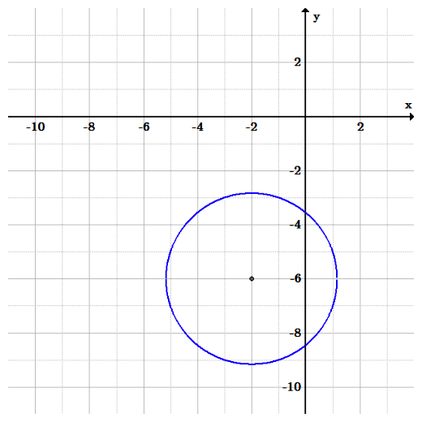{kind=link}
Graph of the circle $2x^2+2y^2+8x+24y+60=0$ .
There are many points you could choose. For example, $(-5,-5)$ and $(-3, -9)$ :
Both are valid points on the circle.
Exercise 4
- Put the equation $\displaystyle{ \frac{4x^2}{9} + 25y^2 = 1 }$ into standard form.
- What is the center?
- How long is the major axis?
- How long is the minor axis?
- Graph it.
Answer
This almost looks like an ellipse in standard form, doesn't it? It even has a number on the right side. But it isn't. There is no room in the standard form for the values $4$ and $25$ in the numerators. How can we get rid of them to get into standard form?
Rewrite the left-hand term, $\displaystyle{\frac{4x^2}{9}}$ , by dividing the top and bottom of the fraction by $4$ . Leave the bottom as a fraction; don't make it a decimal.
Rewrite the right-hand term, $25y^2$ , as $\displaystyle{\frac{25y^2}{1}}$ , and divide the top and bottom of the fraction by $25$ . Leave the bottom as a fraction; don't make it a decimal.
The equation is now:
From the standard equation, $\displaystyle{\frac {\left(x-h\right)^2}{a^2}+\frac {\left(y-k\right)^2}{b^2}= 1}$ , we know that the center is at $\left(h,k\right)$ . Since these are both zero in this equation, the center is at $\left(0,0\right)$ .
The major axis depends which is longer, $a$ or $b$ . Let's solve for both, and find out which is larger afterward.
$\displaystyle{ \begin{align} b^2 &= \frac{1}{25} \\ b &= \frac{1}{5} \\ 2b &= \frac{2}{5} \end{align} }$
Since $\displaystyle{3>\frac{2}{5}}$ , $2a>2b$ , and $2a$ is the major axis. The major axis length is $2a = 3$ , and the minor axis length is $\displaystyle{2b = \frac{2}{5}}$ .
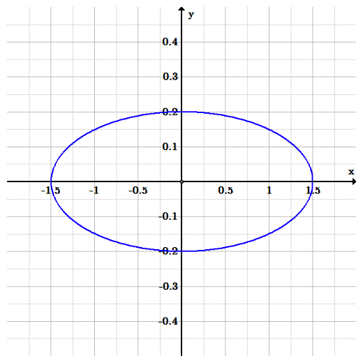{kind=link}
Graph of the ellipse $ \frac{4x^2}{9} + 25y^2 = 1$ .
11.4. The Hyperbola
11.4.1. Introduction to Hyperbolas
Hyperbolas are one of the four conic sections, and are described by certain kinds of equations.
Learning Objective
Connect the equation for a hyperbola to the shape of its graph
Key Points
- A hyperbola is formed by the intersection of a plane perpendicular to the bases of a double cone.
- All hyperbolas have an eccentricity value greater than $1$ .
- All hyperbolas have two branches, each with a vertex and a focal point.
- All hyperbolas have asymptotes, which are straight lines that form an X that the hyperbola approaches but never touches.
Key Terms
- hyperbola
- One of the conic sections.
- ellipse
- One of the conic sections.
- vertices
- A turning point in a curved function. Every hyperbola has two vertices.
- focal point
- A point not on a hyperbola, around which the hyperbola curves.
A hyperbola can be defined in a number of ways. A hyperbola is:
- The intersection of a right circular double cone with a plane at an angle greater than the slope of the cone (for example, perpendicular to the base of the cone)
- The set of all points such that the difference between the distances to two focal points is constant
- The set of all points such that the ratio of the distance to a single focal point divided by the distance to a line (the directrix) is greater than one
Let's see how that second definition gives us what is called the standard form of a hyperbola equation.
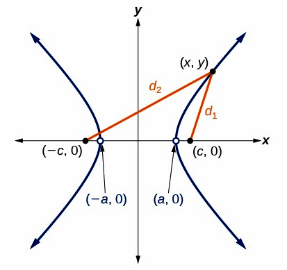{kind=link}
The hyperbola, shown in blue, has a center at the origin, two focal points at $(-c,0)$ and $(c,0)$ , and two vertices located at $+a$ and $-a$ on the $x$ -axis. A hyperbola consists of two roughly U-shaped (but not parabolic) curves with oblique asymptotes. In this example, the two curves open to the left and to the right, and are symmetric over the x-axis. The foci are inside the U-shaped curves. (To the left of the left curve's vertex, and to the right of the right curve's vertex.)
We begin with two focal points, $F_1$ and $F_2$ , located on the $x$ -axis, so that they have coordinates $(c,0)$ and $(-c,0)$ (other arrangements are possible). We want the set of all points that have the same difference between the distances to these points. The center of this hyperbola is the origin $(0,0)$ .
Imagine that we take a point on the red hyperbola curve, called $P$ , and we let that point be the $+a$ value on the $x$ -axis. Then the difference of distances between $P$ and the two focal points is:
where $a$ is the distance from the center (origin) to the vertices of the hyperbola. With this value for the difference of distances, we can choose any point $(x,y)$ on the hyperbola and construct an equation by use of the distance formula:
From here there is some straightforward, but messy, algebra. We need to square both sides of this equation multiple times if we want the variables to escape their square roots. When the dust settles, we have:
At this point we introduce one more parameter, defined as $b^2 = c^2 - a^2$ , which reduces the hyperbola even further:
Lastly we divide both sides of the equation by $a^2b^2$ :
Thus, the standard form of the equation for a hyperbola with focal points on the $x$ axis is:
If the focal points are on the $y$ -axis, the variables simply change places:
Note that the hyperbola standard form is very similar to the standard form of the ellipse:
The similarity is not coincidental. The ellipse can be defined as all points that have a constant sum of distances to two focal points, and the hyperbola is defined as all points that have constant difference of distances to two focal points.
There is another common form of hyperbola equation that, at first glance, looks very different: $\displaystyle{y = \frac{1}{x}}$ or $xy = 1$ .
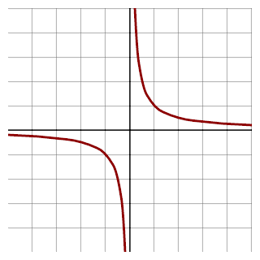{kind=link}
This hyperbola is defined by the equation $xy = 1$ . Two curves in the third and first quadrants. Both have the x and y axes as asymptotes, and both are decreasing.
From the graph, it can be seen that the hyperbola formed by the equation $xy = 1$ is the same shape as the standard form hyperbola, but rotated by $45^\circ$ . To prove that it is the same as the standard hyperbola, you can check for yourself that it has two focal points and that all points have the same difference of distances. Another way to prove it algebraically is to construct a rotated $x$ -$y$ coordinate frame.
11.4.2. Parts of a Hyperbola
The features of a hyperbola can be determined from its equation.
Learning Objective
Describe the parts of a hyperbola and the expressions for each
Key Points
- Hyperbolas are conic sections, formed by the intersection of a plane perpendicular to the bases of a double cone.
- Hyperbolas can also be understood as the locus of all points with a common difference of distances to two focal points.
- All hyperbolas have two branches, each with a focal point and a vertex.
- Hyperbolas are related to inverse functions, of the family $\displaystyle{y=\frac{1}{x}}$ .
A hyperbola is one of the four conic sections. All hyperbolas share common features, and it is possible to determine the specifics of any hyperbola from the equation that defines it.
Standard Form
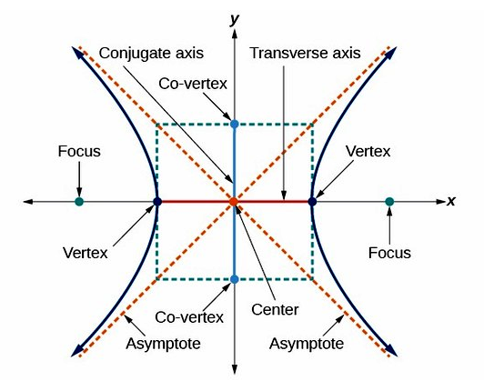{kind=link}
All hyperbolas share common features. A hyperbola consists of two curves, each with a vertex and a focus. The transverse axis is the axis that crosses through both vertices and foci, and the conjugate axis is perpendicular to it. A hyperbola also has asymptotes which cross in an "x". The two branches of the hyperbola are on opposite sides of the asymptotes' cross. The vertices and asymptotes can be used to form a rectangle, with the vertices at the centers of two opposite sides and the corners on the asymptotes. The centers of the other two sides, along the conjugate axis, are called the co-vertices. Where the asymptotes of the hyperbola cross is called the center. A hyperbola has two roughly U-shaped (but not parabolic) curves which lie on opposite sides of two crosses asymptotes. They have foci that lie inside the vertices. The hyperbola shown has its transverse axis, which is its axis of symmetry, along the x-axis.
If the foci lie on the $x$ -axis, the standard form of a hyperbola is:
If the foci lie on the $y$ -axis, the standard form is:
We will use the $x$ -axis hyperbola to demonstrate how to determine the features of a hyperbola, so that $a$ is associated with $x$ -coordinates and $b$ is associated with $y$ -coordinates. For a $y$ -axis hyperbola, the associations are reversed.
Center
The center has coordinates $(h,k)$ .
Vertices
The vertices have coordinates $(h + a,k)$ and $(h-a,k)$ . The line connecting the vertices is called the transverse axis.
Co-Vertices
The co-vertices correspond to $b$ , the "minor semi-axis length", and have coordinates $(h,k+b)$ and $(h,k-b)$ .
Asymptotes
The major and minor axes $a$ and $b$ , as the vertices and co-vertices, describe a rectangle that shares the same center as the hyperbola, and has dimensions $2a \times 2b$ . The asymptotes of the hyperbola are straight lines that are the diagonals of this rectangle. We can therefore use the corners of the rectangle to define the equation of these lines:
The rectangle itself is also useful for drawing the hyperbola graph by hand, as it contains the vertices. When drawing the hyperbola, draw the rectangle first. Then draw in the asymptotes as extended lines that are also the diagonals of the rectangle. Finally, draw the curve of the hyperbola by following the asymptote inwards, curving in to touch the vertex on the rectangle, and then following the other asymptote out. Repeat for the other branch.
Focal Points
The foci have coordinates $(h+c, k)$ and $(h-c,k)$ . The value of $c$ is found with this relation:
Rectangular Hyperbola
Rectangular hyperbolas, defined by
for some constant $m$ , are much simpler to analyze than standard form hyperbolas.
{kind=link}
This rectangular hyperbola has its center at the origin, and is also the graph of the function $\displaystyle{f(x) = \frac{1}{x}}$ . A hyperbola with asymptotes of the x- and y-axes, and branches in quadrants three and one. It is always decreasing.
Center
The center of a rectangular hyperbola has coordinates $(h,k)$ .
Vertices and Co-Vertices
The rectangular hyperbola is highly symmetric. Both its major and minor axis values are equal, so that $a = b = \sqrt{2m}$ . The vertices have coordinates $(h+\sqrt{2m},k+\sqrt{2m})$ and $(h-\sqrt{2m},k-\sqrt{2m})$ .
The co-vertices have coordinates $(h-\sqrt{2m},k+\sqrt{2m})$ and $(h+\sqrt{2m},k-\sqrt{2m})$ .
Asymptotes
The asymptotes of a rectangular hyperbola are the $x$ - and $y$ -axes.
Focal Points
We can use $c^2 = a^2 + b^2$ as before. With $a = b = \sqrt{2m}$ , we find that $c = \pm 2\sqrt{m}$ . Therefore the focal points are located at $(h+2\sqrt{m},k+2\sqrt{m})$ and $(h-2\sqrt{m},k-2\sqrt{m})$ .
11.4.3. Applications of Hyperbolas
A hyperbola is an open curve with two branches and a cut through both halves of a double cone, which is not necessarily parallel to the cone's axis.
Learning Objective
Discuss applications of the hyperbola to real world problems
Key Points
- Hyperbolas have applications to a number of different systems and problems including sundials and trilateration.
- Hyperbolas may be seen in many sundials. On any given day, the sun revolves in a circle on the celestial sphere, and its rays striking the point on a sundial trace out a cone of light. The intersection of this cone with the horizontal plane of the ground forms a conic section.
- A hyperbola is the basis for solving trilateration problems, the task of locating a point from the differences in its distances to given points—or, equivalently, the difference in arrival times of synchronized signals between the point and the given points.
Key Terms
- trilateration
- The determination of the location of a point based on its distance from three other points.
- hyperbola
- A conic section formed by the intersection of a cone with a plane that intersects the base of the cone and is not tangent to the cone.
- conic section
- Any of the four distinct shapes that are the intersections of a cone with a plane, namely the circle, ellipse, parabola and hyperbola.
Example
- A hyperbola is the basis for solving trilateration problems, the task of locating a point from the differences in its distances to given points — or, equivalently, the difference in arrival times of synchronized signals between the point and the given points. Such problems are important in navigation, particularly on water; a ship can locate its position from the difference in arrival times of signals from GPS transmitters.
Applications and Problem Solving
As we should know by now, a hyperbola is an open curve with two branches, the intersection of a plane with both halves of a double cone. The plane may or may not be parallel to the axis of the cone.
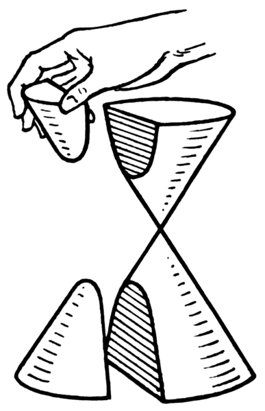{kind=link}
A hyperbola is an open curve with two branches, the intersection of a plane with both halves of a double cone. The plane may or may not be parallel to the axis of the cone.
Here are some examples of hyperbolas in the real world.
Sundials
Hyperbolas may be seen in many sundials. Every day, the sun revolves in a circle on the celestial sphere, and its rays striking the point on a sundial traces out a cone of light. The intersection of this cone with the horizontal plane of the ground forms a conic section. The angle between the ground plane and the sunlight cone depends on where you are and the axial tilt of Earth, which changes seasonally. At most populated latitudes and at most times of the year, this conic section is a hyperbola.
Sundials work by casting the shadow of a vertical marker, sometimes called a gnomon, over a clock face on the horizontal surface. The angle between the sunlight and the ground will be the same as the angle formed by the line connecting the tip of the gnomon with the end of its shadow.
If we mark where the end of the shadow falls over the course of the day, the line traced out by the shadow forms a hyperbola on the ground (this path is called the declination line). The shape of this hyperbola varies with the geographical latitude and with the time of the year, since those factors affect the angle of the cone of the sun's rays relative to the horizon.
The parameters of the traced hyperbola, such as its asymptotes and its eccentricity, are related to the specific physical conditions that produced it, namely the angle between the sunlight and the ground, and the latitude at which the sundial exists.
Trilateration
Trilateration is the a method of pinpointing an exact location, using its distances to a given points. The can also be characterized as the difference in arrival times of synchronized signals between the desired point and known points. These types of problems arise in navigation, mainly nautical. A ship can locate its position using the arrival times of signals from GPS transmitters. Alternatively, a homing beacon can be located by comparing the arrival times of its signals at two separate receiving stations. This can be used to track people, cell phones, internet signals, and many other things.
In the case in which a ship, or other object to be located, only knows the difference in distances between itself and two known points, the curve of possible locations is a hyperbola. One way of defining a hyperbola is as precisely this: the curve of points such that the absolute value of the difference between the distances to two focal points remains constant.
So if we call this difference in distances $2a$ , the hyperbola will have vertices separated by the same distance $2a$ , and the foci of the hyperbola will be the two known points.
The Kepler Orbit of Particles
The Kepler orbit is the path followed by any orbiting body. This can be applied to a particle of any size, as long as gravity is the only force causing the orbital trajectory. Depending on the orbital properties, including size and shape (eccentricity), this orbit can be any of the four conic sections. In particular, if the eccentricity e of the orbit is greater than $1$ , the path of such a particle is a hyperbola. In the figure, the blue line shows the hyperbolic Kepler orbit. In the common case of a gravitational orbit, the massive object is one of the foci of the hyperbola (or other conic section).
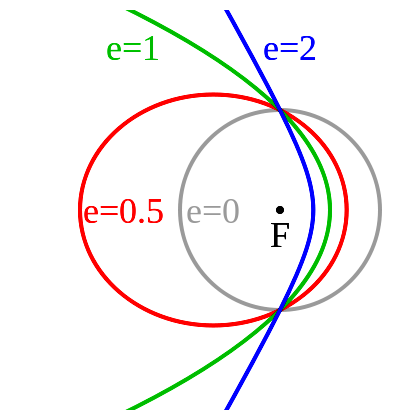{kind=link}
A diagram of the various forms of the Kepler Orbit and their eccentricities. Blue is a hyperbolic trajectory ($e > 1$ ). Green is a parabolic trajectory ($e = 1$ ). Red is an elliptical orbit ($e < 1$ ). Grey is a circular orbit ($e = 0$ ).
Physically, another way to understand hyperbolic orbits is in terms of the energy of the orbiting particle. Orbits which are circular or elliptical are bound orbits, which is to say the object never escapes its closed path around one of the focal points. This is associated with the particle's total energy $E$ being less than the minimum energy required to escape, and so $E$ is said to be negative in these cases.
A parabolic trajectory does have the particle escaping the system. However, this is the very special case when the total energy $E$ is exactly the minimum escape energy, so $E$ in this case is considered to be zero.
If there is any additional energy on top of the minimum (zero) value, the trajectory will become hyperbolic, and so $E$ is positive in the hyperbolic orbit case.
11.5. Nonlinear Systems of Equations and Inequalities
11.5.1. Nonlinear Systems of Equations and Problem-Solving
As with linear systems, a nonlinear system of equations (and conics) can be solved graphically and algebraically for all of its variables.
Learning Objective
Solve nonlinear systems of equations graphically and algebraically
Key Points
- Subtracting one equation from another is an effective means for solving linear systems, but it often is difficult to use in nonlinear systems, in which the terms of two equations may be very different.
- Substitution of a variable into another equation is usually the best method for solving nonlinear systems of equations.
- Nonlinear systems of equations may have one or multiple solutions.
Key Terms
- system of equations
- A set of formulas with multiple variables which can be solved using a specific set of values.
- conic section
- Any of the four distinct shapes that are the intersections of a cone with a plane, namely the circle, ellipse, parabola, and hyperbola.
- nonlinear
- An algebraic term that is raised to the power of two or higher; equivalently, a function with a curved graph.
Conic Sections
A conic section (or just conic) is a curve obtained as the intersection of a cone (more precisely, a right circular conical surface) with a plane. In analytic geometry, a conic may be defined as a plane algebraic curve of degree 2. There are a number of other geometric definitions possible. The four types of conic section are the hyperbola, the parabola, the ellipse, and the circle, though the circle can be considered to be a special case of the ellipse.
The type of a conic corresponds to its eccentricity. Conics with eccentricity less than $1$ are ellipses, conics with eccentricity equal to $1$ are parabolas, and conics with eccentricity greater than $1$ are hyperbolas. In the focus-directrix definition of a conic, the circle is a limiting case of the ellipse with an eccentricity of $0$ . In modern geometry, certain degenerate cases, such as the union of two lines, are included as conics as well.
System of Equations
In a system of equations, two or more relationships are stated among variables. A system is solvable as long as there are as many simultaneous equations as variables. If each equation is graphed, the solution for the system can be found at the point where all the functions meet. The solution can be found either by inspection of a graph, typically by using graphing or plotting software, or algebraically.
Nonlinear Systems
Nonlinear systems of equations, such as conic sections, include at least one equation that is nonlinear. A nonlinear equation is defined as an equation possessing at least one term that is raised to a power of 2 or more. When graphed, these equations produce curved lines.
Since at least one function has curvature, it is possible for nonlinear systems of equations to contain multiple solutions. As with linear systems of equations, substitution can be used to solve nonlinear systems for one variable and then the other.
Solving nonlinear systems of equations algebraically is similar to doing the same for linear systems of equations. However, subtraction of one equation from another can become impractical if the two equations have different terms, which is more commonly the case in nonlinear systems.
Example
Consider, for example, the following system of equations:
{kind=link}
The parabola (blue) falls below the line (red) between $x=-2$ and $x=3$ . For all values of $x$ less than $-2$ and greater than $3$ , points on the parabola are above the line.
We can solve this system algebraically by using equation $(1)$ as a substitution. The quantity $x^2$ must be equivalent to the quantity $y$ , so we substitute $x^2$ for $y$ in equation $(2)$ :
This quadratic equation can be solved by moving all the equation's components to the left before using the quadratic formula:
Using the quadratic formula, with $a = 1$ , $b = -2$ , and $c = -6$ , it can be determined that the solutions are $x = -2$ and $x = 3$ .
The solutions for $x$ can then be plugged into either of the original systems to find the value of $y$ . In this example, we will use equation $(1)$ :
Thus, for $x = -2$ , $y = 4$ , and for $x = 3$ , $y = 9$ .
Our final solutions are: $(-2,4)$ and $(3,9)$ .
11.5.2. Models Involving Nonlinear Systems of Equations
Nonlinear systems of equations can be used to solve complex problems involving multiple known relationships.
Learning Objective
Use nonlinear systems of equations to solve problems in the real world
Key Points
- Problems involving simultaneously moving bodies can be solved using systems of equations. If at least one body accelerates or decelerates, the system is nonlinear.
- If the relationship between multiple unknown numbers is described in as many ways as there are numbers, all unknowns can be found using systems of equations. If at least one of those relationships is nonlinear, the system is nonlinear.
- Substitution is the best method for solving for simultaneous equations, although to answer a question, one may not need to solve for every variable.
Key Term
- system of equations
- A set of formulas with multiple variables which can be solved using a specific set of values.
Nonlinear systems of equations are not just for hypothetical discussions—they can be used to solve complex problems involving multiple known relationships.
Real World Examples
Consider, for example, a car that begins at rest and accelerates at a constant rate of $4$ meters per second each second. Its position in meters ($y$ ) can be determined as a function of time in seconds ($t$ ), by the formula:
$\displaystyle{ \begin{align} y&=\frac{1}{2}\left(4\right)t^2\\ y&=2t^2 \end{align} }$
Now consider a second car, traveling at a constant speed of $20$ meters per second. Its position ($y$ ) in meters can be determined as a function of time ($t$ ) in seconds, using the following formula:
$y=20t$
When the first car begins to accelerate, the second car is $400$ meters ahead of it. To express the position of the second car relative to the first as a function of time, we can modify the second equation as such:
$y=20t+400$
To determine where the cars are when they are alongside one another and how much time has passed since the first began to accelerate, we can algebraically solve the system of equations using substitution:
$\begin{align} y&=20t+400\\ 2t^2&=20t+400 \end{align}$
Solving for $t$ , we can find that the cars are side-by-side after $20$ seconds.
Substituting $20$ for $t$ into the equations for either of the cars, we can find that the cars meet $800$ meters ahead of the first car's starting point. Note that a question on an exam may not prompt solutions for both variables.
Some other real-world examples of nonlinear systems include:
- Triangulation of GPS signals. A device like your cellphone receives signals from GPS satellites, which have known orbital positions around the Earth. A signal from a single satellite allows a cellphone to know that it is somewhere on a circle. Additional signals are additional circles that intersect each other, and the cellphone's actual position is at the intersection. Three or more signals reduce the solution of the system to a single coordinate point.
- The conservation of mechanical energy can produce a system of nonlinear equations when there is an elastic (perfectly bouncy) collision. The kinetic energy of the objects depends on the speed squared, and the momentum depends on the speed directly.
- Manufacturing and design of everything, from electronic parts to metal tools to the architecture of buildings, uses computer-aided design software that helps create three-dimensional shapes from the intersection of curved lines. Rendering and visualizing these objects, and formulating a plan for constructing them, requires the software to solve nonlinear systems.
Additional Example
In addition to practical scenarios like the above, nonlinear systems can be used in abstract problems. For example, a question on an exam could ask:
The product of two numbers is 12, and the sum of their squares is 40. What are the numbers?
In this case, we could make an equation for each known relationship:
$\begin{align} x\cdot y&=12 \\ x^2+y^2&=40 \end{align}$
Substitution can be used to calculate that the numbers are 2 and 6.
11.5.3. Nonlinear Systems of Inequalities
Systems of nonlinear inequalities can be solved by graphing boundary lines.
Learning Objective
Practice techniques for solving nonlinear systems of inequalities
Key Points
- A nonlinear system of inequalities may have at least one solution; if it does, a solution may be bounded or unbounded.
- A solution for a nonlinear system of inequalities will be in a region that satisfies every inequality in the system.
- The best way to show solutions to nonlinear systems of inequalities is graphically, by shading the area that satisfies all of the system's constituent inequalities.
Key Terms
- inequality
- A statement that, of two quantities, one is specifically less than or greater than another. Symbols:
$<$ or$\leq$ or$>$ or$\geq$ , as appropriate. - nonlinear
- A polynomial expression of degree 2 or higher.
- system of equations
- A set of formulas with multiple variables which can be solved using a specific set of values.
A system of inequalities consists of two or more inequalities, which are statements that one quantity is greater than or less than another. A nonlinear inequality is an inequality that involves a nonlinear expression—a polynomial function of degree 2 or higher. The most common way of solving one inequality with two variables $x$ and $y$ is to shade the region on a graph where the inequality is satisfied.
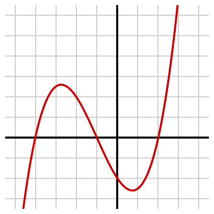{kind=link}
This graph of a cubic function is an example of a nonlinear equation.
Every inequality has a boundary line, which is the equation produced by changing the inequality relation to an equals sign. The boundary line is drawn as a dashed line (if $<$ or $>$ is used) or a solid line (if $\leq$ or $\geq$ is used). One side of the boundary will have points that satisfy the inequality, and the other side will have points that falsify it. By testing individual points, the correct region can be shaded. If we have two inequalities, therefore, we shade in the overlap region, where both inequalities are simultaneously satisfied.
Consider, for example, the system including the parabolic nonlinear inequality:
and the linear inequality:
All points below the line $y=x+2$ satisfy the linear equality, and all points above the parabola $y=x^2$ satisfy the parabolic nonlinear inequality.
Graphing both inequalities reveals one region of overlap: the area where the parabola dips below the line. This area is the solution to the system.
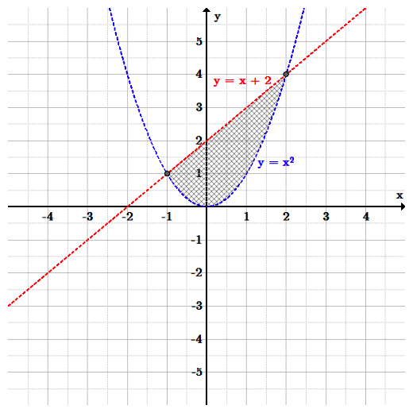{kind=link}
Any point in the region between the line $y=x+2$ and the parabola $y=x^2$ satisfies the system of inequalities.
The limits of each inequality intersect at $(-1, 1)$ and $(2, 4)$ . Note that the area above $y=x^2$ that is also below $ y=x+2$ is closed between those two points. Whereas a solution for a linear system of equations will contain an infinite, unbounded area (lines can only pass one another a maximum of once), in many instances, a solution for a nonlinear system of equations will consist of a finite, bounded area.
This need not be the case with all nonlinear inequalities, but reversing the direction of both inequalities in the previous example would lead to an infinite solution area.